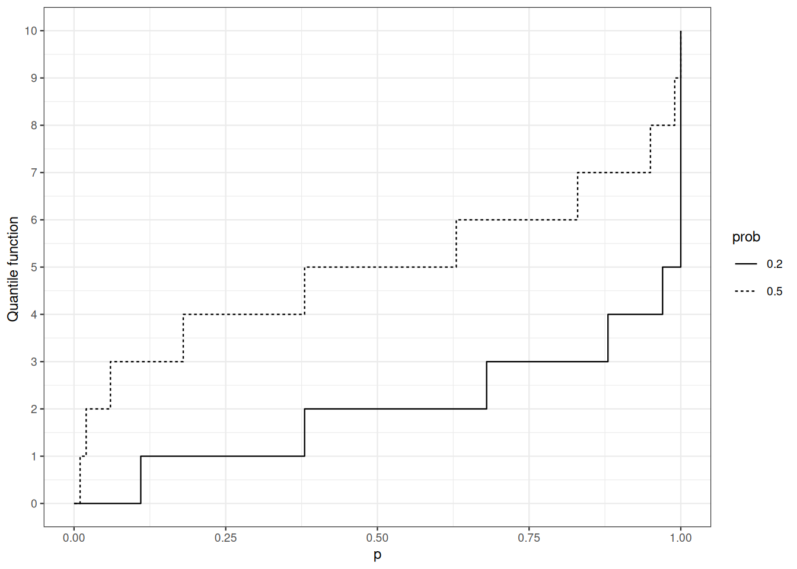
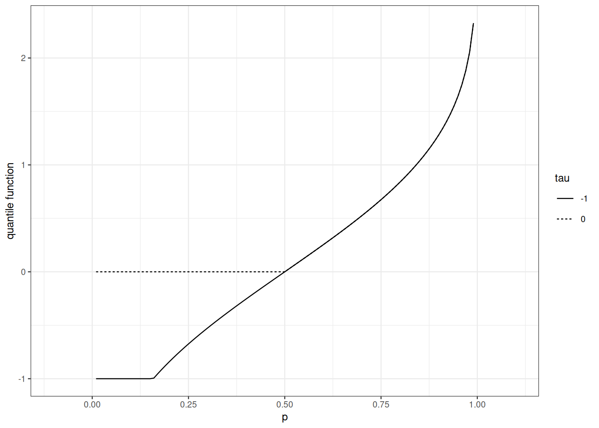
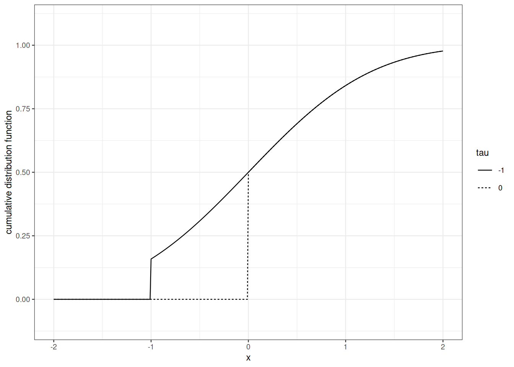
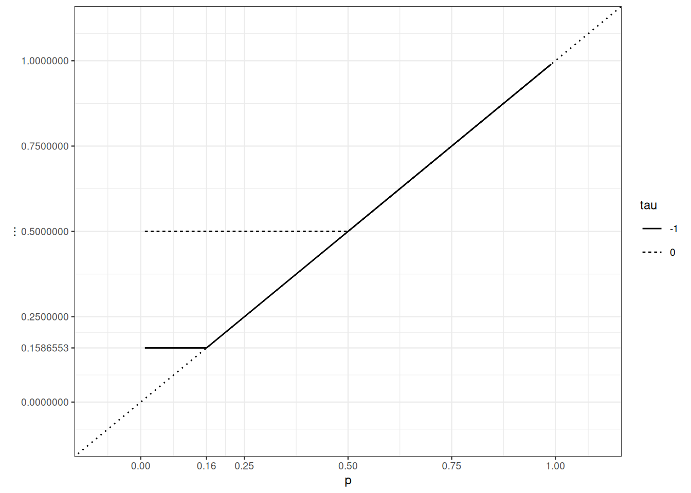
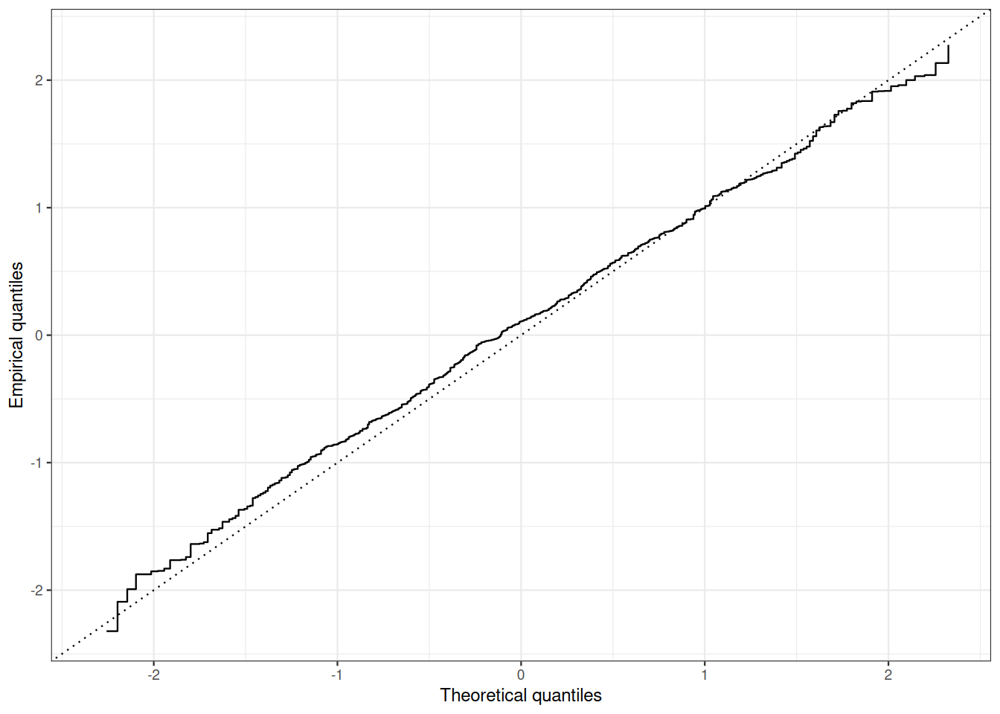

7 Characterizations of probability distributions
7.1 Motivation
In full generality, a probability distribution is a complex and opaque object. It is a \([0,1]\)-valued function defined over a \(\sigma\)-algebra of subsets. A concrete \(\sigma\)-algebra, let alone the abstract notion of \(\sigma\)-algebra, is not easily grasped. Looking for simpler characterizations of probability distributions is a sensible goal. When facing questions like: ``are two probability distributions equal?“, we know it suffices to check that the two distributions coincide on generating families of events. This makes Cumulative Distribution Functions (CDFs) precious tools. Cumulative Distribution Functions and their generalized inverse functions (quantile functions) are very convenient when handling maxima, minima, or more generally order statistics of collections of independent random variables, but when it comes to handling sums of independent random variables or branching processes, cumulative distribution functions are of moderate help.
In this lesson, we review three related ways of characterizing probability distributions through functions defined on the real line: Probability Generating Functions (Section 7.2)), Laplace transforms (Section 7.3)) and characteristic functions which extend Fourier transforms to probability distributions (Section 7.4)). The three methods are distinct in scope but they rely on the same idea and share common features.
Indeed, Probability Generating Functions can be seen as special case of Laplace transforms. The latter can be seen as special cases of Fourier transforms. All three methods do characterize probability distributions. They are equipped with inversion formulae.
The three methods provide us with a seamless treatment of sums of independent random variables.
All three methods relate the integrability of probability distributions and the smoothness of transforms.
In the next lessons (Chapter 11), we shall see that the three transforms characterize convergence in distribution.
Probability generating functions, Laplace transforms and characteristic functions deliver an important analytical machinery to Probability Theory. From Analysis, we get off-the-shelf arguments to establish smoothness properties of transforms, and with little more work, we can construct the inversion formulae.
7.2 Probability generating function
In this section, \(X\) is an integer-valued random variable, with distribution \(P\), cumulative distribution function \(F\) and probability mass function \(p\). Recall that \(P\) is completely characterized by the much simpler objects \(F\) and \(p\). Now, let \(Y\) be another integer-valued random variable living on the same probability space as \(X\), independent from \(X\), with distribution \(Q\), distribution function \(G\) and probability mass function \(q\). What can we tell about the distribution of \(X+Y\)? Is it easy to figure out its cumulative distribution function, its probability mass function?
The probability mass function of (the distribution of) \(X+Y\) is the convolution of \(p\) and \(q\)
\[\begin{array}{rl}\mathbb{P}\{ X + Y = n\} & = \sum_{k=0}^n \mathbb{P}\{ X + Y = n \wedge X = k\} \\ & = \sum_{k=0}^n \mathbb{P}\{ Y = n - k \wedge X = k\} \\ & = \sum_{k=0}^n \mathbb{P}\{ Y = n - k\} \times \mathbb{P}\{ X = k\}\\ & = \sum_{k=0}^n p(k) \times q(n-k) \\ & = p \star q (n) \, ,\end{array}\]
where the third equality comes from independence of \(\sigma(X)\) and \(\sigma(Y)\).
Besides the probability mass function, another function characterizes probability distributions and delivers instantaneous information about the distribution of sums of independent integer-valued random variables and many other things.
Definition 7.1 (Probability Generating Function) The probability generating function (PGF) of a probability distribution over \(\mathbb{N}\), defined by its probability mass function (PMF) \(p\) is the function \(G: [0,1] \to \mathbb{R}\) defined by:
\[G(s) = \sum_{n=0}^\infty p(n) s^n\, .\]
Example 7.1 The probability generating function of basic discrete distributions is easily computed. The results are useful and suggestive.
Bernoulli distribution with parameter \(p\): \[1 - p + p s = 1 + p (s-1)\]
Binomial distribution with parameters \(n\) and \(p\):
\[\sum_{k=0}^n \binom{n}{k} p^k (1-p)^{n-k} s^k = \left(ps + 1- p\right)^n = \left( 1 + p(s-1)\right)^n\]
- Poisson distribution with parameter \(\mu\):
\[\sum_{n=0}^\infty \mathrm{e}^{-\mu} \frac{\mu^n}{n!} s^n = \mathrm{e}^{\mu (s-1)} \,.\]
The next observation follows almost immediately from the definition of probability generating functions.
Proposition 7.1 A probability generating function \(G\) satisfies the following conditions:
- \(G\) is non-negative over \([0,1]\);
- \(G(0) = P\{0\}, \quad G(1)=1\);
- \(G\) is non-decreasing over \([0,1]\);
- \(G\) is continuous and convex.
Proof. Properties 1), 2) and 3) are obvious: \(G\) is a convex combination of non-negative, non-decreasing, continuous and convex functions.
\(\Box\)
Generatingfunctionology lies at the crossing between combinatorics, real analysis, complex analysis, and probability theory. Defining PGF as a power series brings within probability theory a collection of theorems that facilitate the identification of probability distributions or that connect integrability properties of the probability distribution with smoothness properties of the PGF.
Keep in mind that a generating function defines a function from the set of complex numbers \(\mathbb{C}\) to \(\mathbb{C}\):
\[G(z) = \sum_{n=0}^\infty p(n) z^n \qquad\text{for all } z \in \mathbb{C} \text{ such that the series converges}\, .\]
Characterizing the domain of a function defined in that way is crucial. The next proposition is at the core of Power Series theory.
Proposition 7.2 The radius of convergence of the generating function \(G\)
\[ G(z)\ = \sum_{n\in \mathbb{N}} p(n) z^n, \qquad z \in \mathbb{C} \]
is the unique \(R \in [0, \infty) \cup \{+ \infty\}\) such that:
- for every \(z \in \mathbb{C}\) with \(|z| > R\), the series \(\sum_{n\in \mathbb{N}} p(n) z^n\) diverges.
- for every \(z \in \mathbb{C}\) with \(|z| < R\), the series \(\sum_{n\in \mathbb{N}} p(n) z^n\) is absolutely convergent.
The open disk \(\{ z : z \in \mathbb{C}, |z| < R \}\) is called the disk of convergence of \(G\). The circle \(\{ z : z \in \mathbb{C}, |z| = R \}\) is called the circle of convergence of \(G\).
The radius of convergence \(R\) of the probability generating function \(G(z) = \sum_{n \in \mathbb{N}} p(n)z^n\) satisfies
\[ \frac{1}{R} = \limsup_n (p(n))^{1/n} \, . \]
The last statement is called Hadamard’s rule for determination of the radius of convergence:
The radius of convergence of a probability generating function is always at least \(1\).
Proof. Let \(R\) be the supremum of all real numbers \(r\) such that for every \(z \in \mathbb{C}\) with \(|z| < r\), the series \(\sum_{n\in \mathbb{N}} p(n) z^n\) is absolutely convergent.
As \((p(n))_n\) defines an absolutely convergent series, for every \(z\) with \(|z|\leq 1\), \(\sum_n |p(n)z^n| \leq \sum_n p(n) =1\). Hence \(R\geq 1\).
\(\Box\)
Example 7.2 The radius of convergence contains qualitative information about tail behavior:
- For Poisson distributions, the radius of convergence is infinite. This reflects the fast decay of the tail probability of Poisson distributions.
- For geometric distributions, \(p(n) = q (1-q)^{n-1}\), the radius of convergence is \(1/(1-q)\).
- For power law distributions like \(p(n) = n^{-r}/\zeta(r)\) with \(r>1\), the radius of convergence is exactly \(1\).
Just knowing the radius of convergence of a function defined by a Power Series expansion tells us about the smoothness properties of the function.
Theorem 7.1 If \(G\) is defined as a power series \(G(z) = \sum_{n \in \mathbb{N}} a_n z^n\) its (complex) derivative is \(G'(z)= \sum_{n \in \mathbb{N}} (n+1) a_{n+1} z^n\). The derivative \(G'\) and \(G\) have the same radius of convergence.
This general statement about power series entails a very useful corollary for probability generating functions.
Corollary 7.1 (Inversion formula) Let \(f\) be the probability generating function associated with the probability mass function \(p\). Then \(f\) is infinitely many times differentiable over \([0,1)\)
\[f^{(n)}(s) = \sum_{k=n}^\infty \frac{k!}{(k-n)!} \times p(k) s^{k-n} \, ,\]
more specifically:
\[f^{(n)}(0) = n! \times p(n) \, .\]
A probability distribution over \(\mathbb{N}\) is characterized by its probability generating function.
Proof. The property is true for \(n=0\).
Assume it holds for all integers up to \(n\). For \(s\in [0, 1)\) and \(|h|<1-s-\delta\) where \(\delta\) is a small positive number,
\[\begin{array}{rl} \frac{f^{(n)}(s+h) - f^{(n)}(s)}{h} & = \sum_{k=n}^\infty \frac{k!}{(k-n)!} \times p(k) \Big(\sum_{j=0}^{k-n-1}(s+h)^{k-n-1-j} s^{j} \Big) \end{array}\]
The absolute value of the internal sum is smaller than \((k-n) (1-\delta)^{k-n-1}\). As
\[\sum_{k=n}^\infty \frac{k!}{(k-n-1)!} \times p(k) \times (1-\delta)^{k-n-1} < \infty\]
for all \(0<\delta<1\). By the Dominated Convergence Theorem,
\[\begin{array}{rl} \lim_{h \to 0} \frac{f^{(n)}(s+h) - f^{(n)}(s)}{h} & = \sum_{k=n+1}^\infty \frac{k!}{(k-n-1)!} \times p(k) \times s^{k-n-1} \,. \end{array}\]
\(\Box\)
The Probability Generating Function of a Poisson distribution with parameter \(\mu\) equals \(\exp(\mu(s-1))\). If we meet a probability distribution with such a PGF, we know it is a Poisson distribution.
Probability Generating Functions allow for easy investigations of sums of independent random variables.
Proposition 7.3 Let \(X\), \(Y\) be independent integer-valued random variable, with probability generating functions \(G_X\) and \(G_Y\). The probability generating function \(G_{X+Y}\) of \(X+Y\) is \(G_X\times G_Y\):
\[G_{X+Y} = G_X \times G_Y \, .\]
Proof. The proof relies on the fact that non-negative convergent series is commutatively convergent.
\[\begin{array}{rl} \sum_{n=0}^\infty \mathbb{P}\{ X + Y = n\}\times s^n & = \sum_{n=0}^\infty \left( \sum_{k=0}^n p(k) q(n-k) \right) s^n \\ & = \sum_{k=0}^\infty p(k) s^k \sum_{n\geq k}^\infty q(n-k) s^{n-k} \\ & = G_X(s) \times G_Y(s) \end{array}\]
In measure theoretical language, the proposition is a consequence of the Tonelli-Fubini Theorem:
\[\begin{array}{rl} G_{X+Y}(s) & = \mathbb{E}\left[s^{X+Y}\right] \\ & = \mathbb{E}\left[s^{X} \times s^{Y}\right] \\ & = \int_{\mathbb{R}^2} s^x s^y \mathrm{d}P_X \otimes P_Y(x,y) \\ & = \int_{\mathbb{R}} \int_{\mathbb{R}} s^x s^y \mathrm{d}P_X(x) \mathrm{d}P_Y(y) \\ & = \int_{\mathbb{R}} s^y \int_{\mathbb{R}} s^x \mathrm{d}P_X(x) \mathrm{d}P_Y(y) \\ & = \int_{\mathbb{R}} s^y G_X(s) \mathrm{d}P_Y(y) \\ & = G_X(s) \times G_Y(s) \, . \end{array}\]
Example 7.3 If \(X\) and \(Y\) are independent Poisson random variables with parameters \(\mu\) and \(\nu\), then \(G_{X+Y}(s) = \exp(\mu(s-1))\times \exp(\nu(s-1))= \exp((\mu+\nu)(s-1))\). This is (another) proof that \(X+Y\) is Poisson distributed with parameter \(\mu+\nu\).
A PGF is infinitely many times differentiable inside the (open) disk of convergence. If the radius of convergence is larger than \(1\) (as for Poisson distributions), this entails that the PGF is infinitely many times differentiable at \(1\), If the radius of convergence is exactly \(1\), the differentiability on the circle of convergence is not prescribed by general theory.
Theorem 7.2 (Integrability and probability generating functions) Let \(X\) be an integer-valued random variable, with probability generating functions \(f\), then
\(\mathbb{E} X^p < \infty\)
iff
\(f\) is \(p\)-times differentiable at \(1\) and
\[f^{(p)}(1) = \mathbb{E}\left[X (X-1) \ldots (X-p+1)\right] \, .\]
Proof. Assume that \(G\) is \(p\)-times differentiable on the left at \(1\).
We need to establish that \(|X|\) is \(p\)-integrable.
Assume that \(|X|\) is \(p\)-integrable.
The next question arises quickly: when is a function from \([0,1]\) to \([0,\infty)\) a probability generating function? This question is addressed in a broader perspective in the next section.
7.3 Laplace transform
Laplace transforms characterize probability distributions on \([0, \infty).\)
7.3.1 Definition and elementary properties
Definition 7.2 Let \(P\) be a probability distribution function over \([0,\infty]\) with cumulative distribution function \(F\). The Laplace transform of \(P\) is the function \(U\) from \([0,\infty)\) to \([0,1]\) defined by
\[U(\lambda) = \mathbb{E}\left[\mathrm{e}^{- \lambda X}\right] = \int_{[0,\infty)} \mathrm{e}^{- \lambda x} \mathrm{d}F(x) \,\]
where \(X \sim P\).
A probability distribution \(P\) over \(\mathbb{N}\) is also a probability distribution over \([0,\infty)\), as such it has both a probability generating function \(G\) and a Laplace transform \(U\). They are connected by
\[U(\lambda) = G(\mathrm{e}^{-\lambda}) \, .\]
Which properties of Probability Generating Functions are also satisfied by Laplace transforms?
Proposition 7.4 If \(U: [0,\infty) \to [0,1]\) is the Laplace transform of a probability distribution \(P\) over \([0, \infty)\), then
- \(U(0)=1\);
- \(U\) is continuous;
- \(U\) is non-increasing.
- \(U\) is convex.
Exercise 7.1 Check the assertions in the proposition.
Can we recognize Laplace transform of probability distributions over \([0,\infty)\)? This is the content of the next Theorem (which proof is beyond the reach of this course).
Theorem 7.3 (Bernstein’s Theorem) A function \(U: (0, \infty) \to (0,\infty)\) is the Laplace transform of a probability distribution over \([0,\infty)\) iff
- \(U\) is infinitely many times differentiable over \((0, \infty)\)
- \(U(0)=1\)
- \(U\) is completely monotonous: \((-1)^k U^{(k)} \geq 0\) over \((0, \infty)\)
Using the connexion between Probability Generating Functions and Laplace transforms, we are in position to characterize those power series that are Probability Generating Functions.
Corollary 7.2 A function \(G: [0, 1] \to [0,1]\) is the Probability Generating Function of a probability distribution over \(\mathbb{N}\) iff
- \(G\) is infinitely many times differentiable over \((0,1)\)
- \(G(1)=1\)
- \(G\) is completely monotonous: \((-1)^k G^{(k)} \geq 0\) over \((0, 1)\)
Example 7.4 Let \(X\) be \(\text{Gamma}(p, \nu)\)-distributed. The Laplace transform of (the distribution of) \(X\) is
\[\begin{array}{rl} U(\lambda) & = \int_0^\infty \nu \mathrm{e}^{-\lambda x} \mathrm{e}^{-\nu x} \frac{(\nu x)^{p-1}}{\Gamma(p)} \mathrm{d} x \\ & = \frac{\nu^p}{(\lambda +\nu)^p} \int_0^\infty (\lambda +\nu) \mathrm{e}^{-(\lambda +\nu) x} \frac{((\nu+\lambda) x)^{p-1}}{\Gamma(p)} \mathrm{d} x \\ & = \frac{\nu^p}{(\lambda +\nu)^p} \, . \end{array}\]
7.3.2 Injectivity of Laplace transforms and an inversion formula
Theorem 7.4 (Widder’s Theorem) A probability distribution on \([0, \infty)\) is characterized by its Laplace transform.
The construction of the inversion formula relies on deviation inequalities for Poisson distribution. The next proposition is easily checked by using Markov’s inequality with exponential functions and optimization.
Theorem 7.5 (Tail bounds for Poisson distribution) Let \(Z\) be Poisson distributed. Let \(h(x) = \mathrm{e}^x - x -1\) and \(h^*(x)= (x+1)\log (x+1) -x, x\geq -1\) be its convex dual. Then for all \(\lambda \in \mathbb{R}\)
\[\log \mathbb{E} \mathrm{e}^{\lambda (Z-\mathbb{E}Z)} = \mathbb{E}Z h(\lambda) \, .\]
For \(t\geq 0\) \[ \Pr \Big\{ Z \geq \mathbb{E}Z + t \Big\} \leq \mathrm{e}^{-\mathbb{E}Z h^*\Big(\frac{t}{\mathbb{E}Z}\Big)} \] and for \(0 \leq t \leq \mathbb{E}Z\) \[ \Pr \Big\{ Z \leq \mathbb{E}Z -t \Big\} \leq \mathrm{e}^{-\mathbb{E}Z h^*\Big(\frac{-t}{\mathbb{E}Z}\Big)} \, . \]
Remark 7.1.
- See Section 3.7) for the notion of convex duality.
- The next bounds on \(h^*\) deliver looser but easier tail bounds
\[\begin{array}{rll} h^*(t) & \geq \frac{t^2}{2(1 + t/3)} & \text{for } t >0 \\ h^*(t) & \geq \frac{t^2}{2} & \text{for } t <0 \, . \end{array}\]
Corollary 7.3 For all positive \(x, y, y \neq x\), \[ \lim_{n \to \infty} \sum_{k=0}^{nx} e^{-n y} \frac{(ny)^k}{k!} = \mathbb{I}_{y<x} \,. \]
We shall check in one of the next lessons that for \(x >0\): \[ \lim_{n \to \infty} \sum_{k=0}^{\lfloor nx\rfloor} e^{-n x} \frac{(nx)^k}{k!} = \frac{1}{2} \, . \]
Proof. Let \(F\) be the cumulative distribution function of \(P\) and \(U\) its Laplace transform. Let \(X \sim P\).
It suffices to show that \(F(x)\) can be computed from \(U\) at any \(x\) where \(F\) is continuous.
Function \(U\) is infinitely many times differentiable on \((0, \infty)\). For \(k\in \mathbb{N},\) \[ \frac{\mathrm{d}^kU}{\mathrm{d}\lambda^k} = (-1)^k \int_{[0,\infty)} x^k e^{-\lambda x} \mathrm{d}F(x) \, . \] and \(U\) has a power series expansion at every \(\lambda \in (0,1)\), for \(\lambda' \in (0,1)\):
\[\begin{array}{rl} U(\lambda') & = \sum_{k=0}^\infty \frac{(\lambda' -\lambda)^k}{k!} \frac{\mathrm{d}^kU}{\mathrm{d}\lambda^k} \, . \end{array}\]
By [Corollary 7.3), for all \(0 < y \neq x\), \(\lim_{n \to \infty} \sum_{k=0}^{nx} e^{-n y} \frac{(ny)^k}{k!} = \mathbb{I}_{y<x}\).
\[\begin{array}{rl} F(x) & = \int_{\mathbb{R_+}} \mathbb{I}_{y\leq x} \mathrm{d}F(y) \\ & = \int_{\mathbb{R_+}} \mathbb{I}_{y< x} \mathrm{d}F(y) \\ & = \int_{(-\infty, x)} \mathbb{I}_{y< x} \mathrm{d}F(y) + \int_{\{x\}} 1 \mathrm{d}F(y) + \int_{(x, \infty)} \mathbb{I}_{y< x} \mathrm{d}F(y) \\ & = \int_{(-\infty, x)} \mathbb{I}_{y< x} \mathrm{d}F(y) + \int_{\{x\}} 1 \mathrm{d}F(y) + \int_{(x, \infty)} \mathbb{I}_{y< x} \mathrm{d}F(y) \\ & = \int_{(-\infty, x) \cup (x, \infty)} \lim_{n \to \infty} \sum_{k=0}^{nx} e^{-n y} \frac{(ny)^k}{k!} \mathrm{d}F(y) + \int_{\{x\}} 1 \mathrm{d}F(y) \\ & = \lim_{n \to \infty} \sum_{k=0}^{nx} \frac{(-n)^k}{k!}\int_{(-\infty, x) \cup (x, \infty)} e^{-n y} {(-y)^k} \mathrm{d}F(y) + \int_{\{x\}} 1 \mathrm{d}F(y)\\ & \text{by dominated convergence} \\ & = \lim_{n \to \infty} \sum_{k=0}^{nx} \frac{(-n)^k}{k!} \frac{\mathrm{d}^kU}{\mathrm{d}\lambda^k}_{\mid \lambda=n} \, . \end{array}\]
If \(F\) is continuous at \(x\), \[ F(x) = \lim_{n \to \infty} \sum_{k=0}^{nx} \frac{(-n)^k}{k!} \frac{\mathrm{d}^kU}{\mathrm{d}\lambda^k}_{\mid \lambda=n} \, . \] If \(F\) jumps at \(x\), \[ F(x) - \frac{P\{X=x\}}{2} =\lim_{n \to \infty} \sum_{k=0}^{nx} \frac{(-n)^k}{k!} \frac{\mathrm{d}^kU}{\mathrm{d}\lambda^k}_{\mid \lambda=n} \, . \] This process shows that the Laplace transform contains enough information to reconstruct the distribution function which in turn characterizes the probability distribution.
Laplace transforms of sums of independent non-negative random variables are easily obtained from the Laplace transforms of the summands.
Proposition 7.5 Let \(X\) and \(Y\) be two independent \([0,\infty)\)-valued random variables, with Laplace transforms \(U_X\) and \(U_Y\). The Laplace transform of (the distribution of) \(X+Y\) is \[ G_{X+Y} = G_X \times G_Y \, . \]
Proof. \[\begin{array}{rl} G_{X+Y}(\lambda) & = \mathbb{E}\Big[\mathrm{e}^{\lambda (X+Y)}\Big] \\ & = \mathbb{E}\Big[\mathrm{e}^{\lambda X} \times \mathrm{e}^{\lambda Y}\Big] \\ & = \mathbb{E}\Big[\mathrm{e}^{\lambda X} \Big] \times \mathbb{E}\Big[\mathrm{e}^{\lambda Y}\Big]\\ & \text{independence}\\ & = G_X(\lambda) \times G_Y(\lambda) \, . \end{array}\]
Combining the inversion theorem and the explicit formula for the Laplace transform of Gamma distributions, we recover the fact that sums of independent Gamma-distributed random variables with the same intensity parameter is also Gamma distributed.
If \(X \sim \text{Gamma}(p, \lambda)\) is independent from \(Y \sim \text{Gamma}(q, \lambda)\) then \(X+Y\) has Laplace transform \(\Big(\frac{\nu}{\lambda+\nu}\Big)^{p+q}\) and is \(\text{Gamma}(p+q, \lambda)\)-distributed.
7.4 Characteristic functions and Fourier transforms
The Laplace transform characterizes probability distributions supported by \([0, \infty)\). Characteristic functions deal with general probability distributions. They extend to multivariate distributions.
7.4.1 Characteristic function
The next transform can be defined for all probability distributions over \(\mathbb{R}\). And the definition can be extended to distributions on \(\mathbb{R}^k, k\geq 1\).
Let the real-valued random variable \(X\) be distributed according to \(P\) with cumulative distribution function \(F\), the characteristic function of distribution \(P\) is the function from \(\mathbb{R}\) to \(\mathbb{C}\) defined by \[ \widehat{F}(t) = \mathbb{E}\left[\mathrm{e}^{i t X}\right] = \int_{\mathbb{R}} \mathrm{e}^{i t x} \mathrm{d}F(x) = \int_{\mathbb{R}} \cos(t x) \mathrm{d}F(x) + i \int_{\mathbb{R}} \sin(t x) \mathrm{d}F(x) \, . \]
If \(F\) is absolutely continuous with density \(f\) then \(\widehat{F}\) is (up to a multiplicative constant) the Fourier transform of \(f\).
Let the real-valued random variable \(X\) be distributed according to \(P\) with characteristic function \(\widehat{F}\).
- \(\widehat{F}\) is (uniformly) continuous over \(\mathbb{R}\)
- \(\widehat{F}(0)=1\)
- If \(X\) is symmetric, \(\widehat{F}\) is real-valued
- The characteristic function of the distribution of \(a X +b\) is \[\mathrm{e}^{it b} \widehat{F}(at) \, .\]
Proof. Let us check the continuity property. The three others are left as exercises.
Trigonometric calculus leads to \[\begin{array}{rl} \Big| \mathrm{e}^{i(t+ \delta)x} - \mathrm{e}^{itx}\Big| & = \Big| \mathrm{e}^{itx}\Big| \times \Big|\mathrm{e}^{i\delta x} - 1\Big|\\ & \leq \Big|\mathrm{e}^{i\delta x} - 1\Big| \\ & \leq 2 \Big( 1 \wedge \big| \delta x \big| \Big) \end{array}\] for every \(t\in \mathbb{R}, \delta \in \mathbb{R}, x \in \mathbb{R}\). Taking integration with respect to \(F\), \[\begin{array}{rl} \Big| \widehat{F}(t+\delta) - \widehat{F}(t)\Big| & \leq \int 2 \Big( 1 \wedge \big| \delta x \big| \Big) \mathrm{d}F(x) \,. \end{array}\] Resorting to the dominated convergence theorem, we conclude \[ \lim_{\delta \to 0} \Big| \widehat{F}(t+\delta) - \widehat{F}(t)\Big| = 0 \] uniformly in \(t\).
The next properties are easily checked:
- \(|\widehat{F}(t)|\leq 1\) for every \(t\in \mathbb{R}\);
Compute the characteristic function of:
- The Poisson distribution with parameter \(\lambda>0\);
- The uniform distribution on \([-1,1]\);
- The triangle distribution on \([-1,1]\) (density: \(1-|x|\) on \([-1,1]\));
- The exponential distribution with density \(\exp(-x)\) on \([0,+\infty)\);
- The Laplace distribution, density \(1/2 \exp(-|x|)\).
Just as Probability Generating Functions and Laplace transforms, Characteristic functions of sums of independent random variables have a simple structure.
Proposition 7.6 Let \(X\) and \(Y\) be independent random variables with cumulative distribution functions \(F_X\) and \(F_Y\), then
\[\widehat{F}_{X+Y}(t) = \widehat{F}_X(t) \times \widehat{F}_Y(t)\]
for all \(t \in \mathbb{R}\).
Proof. The third equality is a consequence of the independence of \(X\) and \(Y\): \[\begin{array}{rl} \widehat{F}_{X+Y}(t) & = \mathbb{E}\Big[\mathrm{e}^{it (X+Y)}\big] \\ & = \mathbb{E}\Big[\mathrm{e}^{it X} \mathrm{e}^{it Y}\big] \\ & = \mathbb{E}\Big[\mathrm{e}^{it X} \big] \times \mathbb{E}\big[\mathrm{e}^{it Y}\big] \\ & = \widehat{F}_X(t) \times \widehat{F}_Y(t) \, . \end{array}\]
Use a counter-example to prove that \[ \Big(\forall t \in \mathbb{R}, \quad \widehat{F}_{X+Y}(t) = \widehat{F}_X(t) \times \widehat{F}_Y(t) \Big) \not\Rightarrow X \perp\!\!\!\perp Y \, . \]
7.4.2 Characteristic function of a univariate Gaussian distribution
It is possible to compute characteristic functions by resorting to Complex Analysis. But we shall refrain from this when computing the most important characteristic function, the characteristic function of the standard Gaussian distribution.
Proposition 7.7 Let \(\widehat{\Phi}\) denote the characteristic function of the standard univariate Gaussian distribution \(\mathcal{N}(0,1)\), the following holds
\[\widehat{\Phi}(t) = \mathrm{e}^{-\frac{t^2}{2}} \, .\]
Proof. Recall that as the standard Gaussian density is even, the characteristic function is real-valued and even.
Moreover, \(\widehat{\Phi}\) is differentiable and the derivative can be computing by interverting expectation and derivation with respect to \(t\). \[\begin{array}{rl} \widehat{\Phi}'(t) & = - \mathbb{E}\left[X \sin(t X) \right] \\ & = - \frac{1}{\sqrt{2 \pi}}\int_{\mathbb{R}} x \sin(tx) \mathrm{e}^{-\frac{x^2}{2}} \mathrm{d}x \\ & = \frac{1}{\sqrt{2 \pi}} \Big[\sin(tx) \mathrm{e}^{-\frac{x^2}{2}} \Big]_{-\infty}^{\infty} - t \frac{1}{\sqrt{2 \pi}}\int_{\mathbb{R}} \cos(tx) \mathrm{e}^{-\frac{x^2}{2}} \mathrm{d}x \\ & = - t \widehat{\Phi}(t) \,. \end{array}\] Hence, \(\widehat{F}\) is a solution of the differential equation: \(g'(t) = -t g(t)\) with \(g(0)=1\).
The differential equation is readily solved, and the solution is \(g(t)= \mathrm{e}^{- \frac{t^2}{2}}\).
Why is \(\widehat{\Phi}\) differentiable? Why are we allowed to interchange expectation and derivation?
Note that a byproduct of Proposition @ref(prp:proCharFunGauss) is the following integral representation of the Gaussian density.
\[\phi(x) = \frac{1}{2 \pi} \int_{\mathbb{R}} \widehat{\Phi}(t) \mathrm{e}^{-itx} \mathrm{d}t \, .\]
It does not look interesting, but it is a milestone for the derivation of the general inversion formula below.
7.4.3 Sums of independent random variables and convolutions
The interplay between Characteristic functions/Fourier transforms and summation of independent random variables is one of the most attractive features of this transformation. In order to understand it, we shall need an operation stemming from analysis. Recall that if \(f\) and \(g\) are two integrable functions, the convolution of \(f\) and \(g\) is defined as \[f \star g (x) = \int_{\mathbb{R}} f(x-y)g(y) \mathrm{d}y = \int_{\mathbb{R}} g(x-y)f(y) \mathrm{d}y \, .\] Note that \(f \star g\) is also integrable. It is not too hard to check that if \(f\) and \(g\) are two probability densities then so is \(f \star g\), moreover \(f \star g\) is the density of the distribution of \(X+Y\) where \(x \sim f\) is independent from \(Y \sim g\). The next proposition extends this observation.
Proposition 7.8 Let \(X,Y\) be two independent random variables with distributions \(P_X\) and \(P_Y\). Assume that \(P_X\) is absolutely continuous with density \(p_X\). Then the distribution of \(X+Y\) is absolutely continuous and has density \[ p_x \star P_Y (z) = \int_{\mathbb{R}} p_X(z -y ) \mathrm{d}P_Y(y) \, . \]
Proof. Let \(B\) be Borel subset of \(\mathbb{R}\). \[\begin{array}{rl} P \Big\{ X+Y \in B\Big\} & = \int_{\mathbb{R}} \Big( \int_{\mathbb{R}} \mathbb{I}_B(x+y) p_X(x)\mathrm{d}x\Big) \mathrm{d}P_Y(y) \\ & = \int_{\mathbb{R}} \Big(\int_{\mathbb{R}} \mathbb{I}_B(z) p_X(z-y)\mathrm{d}z\Big) \mathrm{d}P_Y(y) \\ & = \int_{\mathbb{R}} \mathbb{I}_B(z) \Big(\int_{\mathbb{R}} p_X(z-y) \mathrm{d}P_Y(y) \Big) \mathrm{d}z \\ & = \int_{\mathbb{R}} \mathbb{I}_B(z) p_x \star P_Y (z) \mathrm{d}z \end{array}\] where the first equality follows from the Tonelli-Fubini Theorem, the second equality is obtained by change of variable \(x \mapsto z = x+y\) for every \(y\), the third equality follows again from the Tonelli-Fubini Theorem.
Convolution is not tied to Probability theory.
- In Analysis, convolution is known to be a regularizing (smoothing) operation. This also holds in Probability theory: if the distribution of either \(X\) or \(Y\) has a density and \(X \perp\!\!\!\perp Y\), then the distribution of \(X+Y\) has a density.
- Convolution with smooth distributions plays an important role in non-parametric statsitics, it is at the root of kernel density estimation.
- Convolution is an important tool in Signal Processing.
Check that if \(X\) and \(Y\) are independent with densities \(f_X\) and \(f_Y\), \(f_X \star f_Y\) is a density of the distribution of \(X+Y\).
If \(Y =0\) almost surely (its distribution is \(\delta_0\)), then \(p_X \star \delta_0 = p_X\).
What happens in Proposition @ref(prp:convsum), if we consider the distributions of \(\sigma X +Y\) and let \(\sigma\) decrease to \(0\)?
Proposition 7.9 Let \(X,Y\) be two independent random variables with distributions \(P_X\) and \(P_Y\). Assume that \(P_X\) is absolutely continuous with density \(p_X\) and that \(P_X(-\infty, 0] = \alpha \in (0,1)\). Then \[ \lim_{\sigma \downarrow 0} \mathbb{P}\big\{ Y + \sigma X \leq a \Big\} = P_Y(-\infty, a) + \alpha P_Y\{a\} \, . \]
Proof. \[\begin{array}{rl} \mathbb{P}\big\{ Y + \sigma X \leq a \Big\} & = \int_{\mathbb{R}} \int_{\mathbb{R}} \mathbb{I}_{x \leq \frac{a-y}{\sigma}} p_X(x) \mathrm{d}x \mathrm{d}P_Y(y) \\ & = \int_{(-\infty,a)} \int_{\mathbb{R}} \mathbb{I}_{x \leq \frac{a-y}{\sigma}} p_X(x) \mathrm{d}x \mathrm{d}P_Y(y) \\ & + \int_{\mathbb{R}} \mathbb{I}_{x \leq \frac{a-a}{\sigma}} p_X(x) \mathrm{d}x P_Y\{a\} \\ & + \int_{(a, \infty)} \int_{\mathbb{R}} \mathbb{I}_{x \leq \frac{a-y}{\sigma}} p_X(x) \mathrm{d}x \mathrm{d}P_Y(y) \end{array}\] By monotone convergence, the first and third integrals converge respectively to \(P_Y(-\infty, a)\) and \(0\) while the second term equals \(\alpha P_Y\{a\}\).
7.4.4 Injectivity Theorem and inversion formula
The characteristic function maps probability measures to \(\mathbb{C}\)-valued functions. The main result of this section is that characteristic functions/Fourier transforms define is an injective operator on the set of Probability measures on the real line.
Theorem 7.6 If two probability distribution \(P\) and \(Q\) have the same characteristic function, they are equal.
The injectivity property follows from an explicit inversion recipe. The characteristic function allows us to recover the cumulative distribution function at all its continuity points (just as the Laplace transform did). Again, as continuity points of cumulative distribution functions are dense on \(\mathbb{R}\), this is enough.
Proposition 7.10 Let \(X \sim F\) and \(Z \sim \mathcal{N}(0,1)\) be independent. Let \(Y = X + \sigma Z\), then:
- the distribution of \(Y\) has characteristic function \[ \widehat{F}_\sigma(t) = \widehat{\Phi}(t\sigma) \times \widehat{F}(t) = \mathrm{e}^{- \frac{t^2 \sigma^2}{2}} \widehat{F}(t) \]
- the distribution of \(Y\) is absolutely continuous with respect to Lebesgue measure
- a version of the density of the distribution of \(Y\) is given by \[ \frac{1}{{2 \pi}}\int_{\mathbb{R}} \mathrm{e}^{- \frac{t^2 \sigma^2}{2}} \widehat{F}(t)\mathrm{e}^{-ity} \mathrm{d}t = \frac{1}{{2 \pi}}\int_{\mathbb{R}} \widehat{F}_\sigma(t)\mathrm{e}^{-ity} \mathrm{d}t \,. \]
Why can we take for granted the existence of a probability space with two independent random variables \(X, Z\) distributed as above?
The proposition states that a density of the distribution of \(X + \sigma Z\) can be recovered from the characteristic function of the distribution of \(X + \sigma Z\) by the Fourier inversion formula for functions with integrable Fourier transforms.
Proof. The fact that for any \(\sigma >0\), the distribution of \(Y = X + \sigma Z\) is absolutely continuous with respect to Lebesgue measure comes from Proposition @ref(prp:convsum).
A density of the distribution of \(X + \sigma Z\) is given by \[ \int_{\mathbb{R}} \frac{1}{\sigma} \phi\Big(\frac{y -x}{\sigma}\Big) \mathrm{d}F(x) \] The characteristic function of \(Y\) at \(t\) is \(\mathrm{e}^{- \frac{t^2 \sigma^2}{2}} \widehat{F}(t)\).
\[\begin{array}{rl} \mathbb{P}\Big\{ Y \leq u\Big\} & = \int_{-\infty}^u \int_{\mathbb{R}} \frac{1}{\sigma} \phi\Big(\frac{y -x}{\sigma}\Big) \mathrm{d}F(x) \mathrm{d}y \\ & = \int_{-\infty}^u \int_{\mathbb{R}} \frac{1}{\sigma} \left(\frac{1}{{2 \pi}} \int_{\mathbb{R}} \mathrm{e}^{- \frac{t^2}{2}} \mathrm{e}^{-it \frac{y-x}{\sigma}} \mathrm{d}t\right) \mathrm{d}F(x) \mathrm{d}y \\ & = \int_{-\infty}^u \left(\int_{\mathbb{R}} \frac{1}{\sigma} \frac{1}{{2 \pi}} \mathrm{e}^{- \frac{t^2}{2}} \mathrm{e}^{-\frac{ity}{\sigma}} \left(\int_{\mathbb{R}} \mathrm{e}^{\frac{itx}{\sigma}} \mathrm{d}F(x)\right) \mathrm{d}t\right) \mathrm{d}y \\ & = \int_{-\infty}^u \left(\int_{\mathbb{R}} \frac{1}{\sigma} \frac{1}{{2 \pi}} \mathrm{e}^{- \frac{t^2}{2}} \mathrm{e}^{-\frac{ity}{\sigma}} \widehat{F}(t/\sigma) \mathrm{d}t\right) \mathrm{d}y \\ & = \int_{-\infty}^u \left( \frac{1}{{2 \pi}}\int_{\mathbb{R}} \mathrm{e}^{- \frac{t^2 \sigma^2}{2}}\mathrm{e}^{-ity} \widehat{F}(t)\mathrm{d}t \right) \mathrm{d}y \,. \end{array}\] The quantity \(\left( \frac{1}{{2 \pi}}\int_{\mathbb{R}} \mathrm{e}^{- \frac{t^2 \sigma^2}{2}}\mathrm{e}^{-ity} \widehat{F}(t)\mathrm{d}t \right)\) is a version of the density of the distribution of \(Y = X + \sigma Z\) (why?). Note that it is obtained from the same inversion formula that readily worked for the Gaussian density.
Now we have to show that an inversion formula works for all probability distributions, not only for the smooth probability distributions obtained by adding Gaussian noise. We shall check that we can recover the distribution function from the Fourier transform.
Theorem 7.7 Let \(X\) be distributed according to \(P\), with cumulative distribution function \(F\) and characteristic function \(\widehat{F}\).
Then: \[ \lim_{\sigma \downarrow 0} \int_{-\infty}^u \left( \frac{1}{{2 \pi}}\int_{\mathbb{R}} \mathrm{e}^{-ity} \mathrm{e}^{- \frac{t^2 \sigma^2}{2}}\widehat{F}(t)\mathrm{d}t \right) \mathrm{d}y = F(u_-) + \frac{1}{2} P\{u\} \] where \[ F(u_-) = \lim_{v \uparrow u} F(v) = P(-\infty, u)\, . \]
Proof. The proof consists in combining Propositions @ref(prp:approxident) and @ref(prp:reginversion).
Note that Theorem 7.7) does not deliver directly the distribution function \(F\). Indeed, if \(F\) is not continuous, \(u \mapsto \widetilde{F}(u) = F(u_-) + \frac{1}{2} P\{u\}\), is not a distribution function. But the right-continuous modification of \(\widetilde{F}\): \(u \mapsto \lim_{v \downarrow u} \widetilde{F}(v)\) coincides with \(F\). We have established Theorem 7.6).
When the distribution function is absolutely continuous, Fourier inversion is simpler.
Let \(X\) be distributed according to \(P\), with cumulative distribution function \(F\) and characteristic function \(\widehat{F}\). Assume that \(\widehat{F}\) is integrable (with respect to Lebesgue measure). Then:
- \(P\) is absolutely continuous with respect to Lebesgue measure;
- \(y \mapsto \frac{1}{{2 \pi}} \int_{\mathbb{R}} \widehat{F}(t) \mathrm{e}^{-ity} \mathrm{d}t\) is a uniformly continuous version of the density of \(P\).
Proof. Let \(X\) be distributed according to \(P\) with cumulative distribution function \(F\) and characteristic function \(\widehat{F}\). Let \(Z\) be independent from \(X\) and \(\mathcal{N}(0,1)\). Let \(x\) be a continuity point of \(F\).
\[ \lim_{\sigma \downarrow 0} P\Big\{ X + \sigma Z \leq x \Big\} = F(x) \]
\[\begin{array}{rl} \lim_{\sigma \downarrow 0} P\Big\{ X + \sigma Z \leq x \Big\} & = \lim_{\sigma \downarrow 0} \int_{-\infty}^x \left( \frac{1}{{2 \pi}}\int_{\mathbb{R}} \mathrm{e}^{- \frac{t^2 \sigma^2}{2}}\mathrm{e}^{-ity} \widehat{F}(t)\mathrm{d}t \right) \mathrm{d}y \\ & = \int_{-\infty}^x \frac{1}{{2 \pi}}\int_{\mathbb{R}} \lim_{\sigma \downarrow 0} \mathrm{e}^{- \frac{t^2 \sigma^2}{2}}\mathrm{e}^{-ity} \widehat{F}(t)\mathrm{d}t \mathrm{d}y \\ & = \int_{-\infty}^x \frac{1}{{2 \pi}}\int_{\mathbb{R}} \mathrm{e}^{-ity} \widehat{F}(t)\mathrm{d}t \mathrm{d}y \, \end{array}\] where interversion of limit and integration is justified by dominated convergence.
We close this section by an alternative inversion formula.
Theorem 7.8 (Inversion formula) Let \(P\) be a probability distribution over \(\mathbb{R}\) with cumulative distribution function \(F\), then \[ \lim_{T \to \infty} \frac{1}{2\pi} \int_{-T}^T \frac{\mathrm{e}^{-it a} - \mathrm{e}^{-it b}}{it} \widehat{F}(t) \mathrm{d}t = F(b_-) - F(a) + \frac{1}{2} \Big(P\{b\} + P\{a\}\Big) \, . \]
The proof of Theorem 7.8) can be found in textbooks like (Durrett, 2010) or (Billingsley, 2012).
Let \(\widehat{F}\) denote the characteristic function of the probability distribution \(P\), if \(\widehat{F}(t) = \mathrm{e}^{-\frac{t^2}{2}}\), then \(P\) is the standard univariate Gaussian distribution (\(\mathcal{N}(0,1)\)).
Let \(\widehat{F}\) denote the characteristic function of probability distribution \(P\), if \(\widehat{F}(t) = \mathrm{e}^{i\mu t -\frac{\sigma^2 t^2}{2}}\), then \(P\) is the Gaussian distribution ( \(\mathcal{N}(\mu,\sigma^2)\) ).
Another important byproduct of the proof of injectivity of the characteristic function is Stein’s identity, an important property of the standard Gaussian distribution.
Theorem 7.9 (Stein’s identity) Let \(X \sim \mathcal{N}(0,1)\), and \(g\) be a differentiable function such that \(\mathbb{E}|g'(X)|< \infty\), then\[ \mathbb{E}[g'(X)] = \mathbb{E}[Xg(X)] \, . \] Conversely, if \(X\) is a random variable such that \[ \mathbb{E}[g'(X)] = \mathbb{E}[X g(X)] \] holds for any differentiable funtion \(g\) such that \(g'\) is integrable, then \(X \sim \mathcal{N}(0,1)\).
Proof. The direct part follows by integration by parts.
To check the converse, note that if \(X\) satisfies the identity in the Theorem, then for all \(t \in \mathbb{R}\), the functions \(t \mapsto \mathbb{E} \cos(tX)\) and \(t \mapsto \mathbb{E} \sin(tX)\) satisfy the differential equation \(g'(t) = t g(t)\) with conditions \(\mathbb{E} \cos(0X)=1\) and \(\mathbb{E} \sin(0X) =0\). This entails \(\mathbb{E} \mathrm{e}^{itX} = \exp\Big(-\frac{t^2}{2}\Big)\), that is \(X \sim \mathcal{N}(0,1)\)
7.4.5 Differentiability and integrability
Differentiability of the Fourier transform at \(0\) and integrability are intimately related.
Theorem 7.10 If \(X\) is \(p\)-integrable for some \(p \in \mathbb{N}\) then the Fourier transform of the distribution of \(X\) is \(p\)-times differentiable at \(0\) and the \(p^{\text{th}}\) derivative equals \(i^k \mathbb{E}X^k\).
Proof. The proof relies on a Taylor expansion with remainder of \(x \mapsto \mathrm{e}^{ix}\) at \(x=0\): \[ \mathrm{e}^{ix} - \sum_{k=0}^n \frac{(ix)^k}{k!} = \frac{i^{n+1}}{n!} \int_0^x (x-s)^n \mathrm{e}^{is} \mathrm{d}s \, . \] The modulus of the right hand side can be upper-bounded in two different ways. \[ \frac{1}{n+!}\Big| \int_0^x (x-s)^n \mathrm{e}^{is} \mathrm{d}s \Big| \leq \frac{|x|^{n+1}}{(n+1)!} \] which is good when \(|x|\) is small. To handle large values of \(|x|\), integration by parts leads to \[ \frac{i^{n+1}}{n!} \int_0^x (x-s)^n \mathrm{e}^{is} \mathrm{d}s = \frac{i^{n}}{(n-1)!} \int_0^x (x-s)^{n-1} \left(\mathrm{e}^{is}-1\right) \mathrm{d}s \,. \] The modulus of the right hand side can be upper-bounded by \(2|x|^n/n!\).
Applying this Taylor expansion to \(x=t X\), using the pointwise upper bounds and taking expectations leads to \[\begin{array}{rl} \Big| \widehat{F}(t) - \sum_{k=0}^n \mathbb{E}\frac{(itX)^k}{k!} \Big| & \leq \mathbb{E} \Big[\min\Big( \frac{|tX|^{n+1}}{(n+1)!} ,2 \frac{|tX|^n}{n!}\Big)\Big] \\ & = \frac{|t|^n}{(n+1)!} \mathbb{E} \Big[\min\Big(|tX|^{n+1} ,2 (n+1) |X|^n \Big)\Big] \, . \end{array}\] Note that the right hand side is well defined as soon as \(\mathbb{E}|X|^n < \infty\). Now, by dominated convergence, \[ \lim_{t \to 0} \mathbb{E} \Big[\min\Big(|tX|^{n+1} ,2 (n+1) |X|^n \Big)\Big] = 0\, \] Hence we have established that if \(\mathbb{E}|X|^n < \infty\), \[ \widehat{F}(t) = \sum_{k=0}^n i^k \mathbb{E}X^k \frac{t^k}{k!} + o(|t|^n) \, . \]
In the other direction, the connection is not as simple: differentiability of the Fourier transform does not imply integrability. But the following holds.
Theorem 7.11 If the Fourier transform \(\widehat{F}\) of the distribution of \(X\) satisfies \[ \lim_{h \downarrow 0} \frac{2 - \widehat{F}(h) - \widehat{F}(-h)}{h^2} = \sigma^2 < \infty \] then \(\mathbb{E}X^2 = \sigma^2\), .
Proof. Note that \[ 2 - \widehat{F}(h) - \widehat{F}(-h) = 2\mathbb{E}\Big[1 - \cos(hX)\Big] \, , \] and using Taylor with remainder formula for \(\cos\) at \(0\): \[ 1 - \cos x = \int_0^x \cos(s) (x-s) \mathrm{d}s = x^ 2 \int_0^1 \cos(sx) (1-s) \mathrm{d}s \] Note that \(\int_0^1 \cos(sx) (1-s) \mathrm{d}s\geq 0\) for all \(x \in \mathbb{R}\). \[\begin{array}{rl} \frac{2\mathbb{E}\Big[1 - \cos(hX)\Big]}{h^2} & = 2 \frac{\mathbb{E}\Big[ h^2 X^2 \int_0^1 \cos(shX) (1-s) \mathrm{d}s\Big]}{h^2} \\ & = 2 \mathbb{E}\Big[ X^2 \int_0^1 \cos(shX) (1-s) \mathrm{d}s\Big] \, . \end{array}\] By Fatou’s Lemma: \[ \sigma^2 = \lim_{h \downarrow 0} 2\mathbb{E}\Big[ X^2 \int_0^1 \cos(shX) (1-s) \mathrm{d}s\Big] \geq 2\mathbb{E}\Big[\liminf_{h \downarrow 0} X^2 \int_0^1 \cos(shX) (1-s) \mathrm{d}s \Big] \] but for all \(x \in \mathbb{R}\), by dominated convergence, \[ \liminf_{h \downarrow 0} x^ 2 \int_0^1 \cos(shx) (1-s) \mathrm{d}s = \frac{x^2}{2} \, . \] Hence \[ \sigma^2 \geq \mathbb{E} X^2 \, . \] The proof is completed by invoking Theorem 7.10).
7.4.6 Another application: understanding Cauchy distribution
Assume \(U\) is uniformly distributed over \(]0,1[\), let the real valued random variable \(X\) be defined by \[X = \tan\left(\frac{\pi}{2} (2 \times U -1)\right)\].
As \(\tan\) is continuously increasing from \(-\pi/2\) to \(\pi/2\), the cumulative distribution function of the distribution of \(X\) is \[\begin{array}{rl} \mathbb{P}\{ X \leq x\} & = \mathbb{P}\left\{\tan\left(\frac{\pi}{2}(2U-1)\right) \leq x\right\} \\ & = \mathbb{P}\left\{U \leq \frac{1}{2} + \frac{1}{\pi}\arctan(x) \right\} \\ & = \frac{1}{2} + \frac{1}{\pi}\arctan(x) \end{array}\] for \(x \in \mathbb{R}\).
As \(\arctan\) has derivative \(x \mapsto \frac{1}{1+x^2}\), the cumulative distribution function is absolutely continuous with density: \[\frac{1}{\pi} \frac{1}{1 + x^2}\] This is the density of the Cauchy distribution.
Note that \(\mathbb{E}(X)_+ = \mathbb{E} (X)_- = \mathbb{E}|X| =\infty\). The Cauchy distribution is not integrable.
Now, assume \(X_1, X_2,, \ldots, X_n\) are i.i.d. and Cauchy distributed. Let \(Z = \sum_{i=1}^n X_i/n\). How is \(Z\) distributed? We might compute the convolution power of the Cauchy density. It turns out that starting from the characteristic function is much more simple.
We refrain from computing directly the characteristic function of the Cauchy distribution. We take a roundabout.
Let \(Y\) be distributed according to Laplace distribution, that is with density \(y \mapsto \frac{1}{2} \exp(-|y|)\) for \(y \in \mathbb{R}\). The random variable \(Y\) is symmetric (\(Y \sim -Y\)). Let \(\widehat{F}_Y\) denote the characteristic function of (the distribution of) \(Y\).
\[\begin{array}{rl} \widehat{F}_Y(t) & = \mathbb{E}\mathrm{e}^{tY} \\ & = \mathbb{E}\cos(tY) \\ & = \int_0^{\infty} \mathrm{e}^{-y} \cos(ty) \mathrm{d}y \\ & = \left[- \mathrm{e}^{-y} \cos(ty)\right]_0^\infty - t \int_{0}^\infty \mathrm{e}^{-ty} \sin(ty) \mathrm{d}y \\ & = 1 - t \int_{0}^\infty \mathrm{e}^{-y} \sin(ty) \mathrm{d}y \\ & = 1 -t \left[- \mathrm{e}^{-y} \sin(ty)\right]_0^\infty - t^2 \int_0^\infty \mathrm{e}^{-y} \cos(ty) \mathrm{d}y \\ & = 1 - t^2 \widehat{F}_Y(t) \end{array}\] where we have performed integration by parts twice.
The characteristic function \(\widehat{F}_Y\) satisfies \[\widehat{F}_Y(t) = \frac{1}{1+ t^2}\, ,\] up to \(\frac{1}{\pi}\), this is the density of the Cauchy distribution.
\[\begin{array}{rl} \widehat{F}_X(t) & = \mathbb{E}\mathrm{e}^{itX}\\ & = \int_{-\infty}^{\infty} \frac{1}{\pi} \frac{1}{1+x^2} \cos(tx)\mathrm{d}x \\ & = \frac{2}{\pi} \int_0^\infty \cos(tx) \widehat{F}_Y(x) \mathrm{d}x \\ & = 2 \times \frac{1}{2\pi} \int_{-\infty}^{\infty} \mathrm{e}^{-itx} \widehat{F}_Y(x) \mathrm{d}x \\ & = 2 \times \frac{1}{2} \mathrm{e}^{-|t|} = \mathrm{e}^{-|t|} \end{array}\] where we have used the inversion formula.
Now, the characteristic function of the distribution of \(Z\) is \[\widehat{F}_Z(t) =\left(\mathrm{e}^{-\frac{|t|}{n}}\right)^n= \widehat{F}_X(t)\] which means \(Z \sim X\).
The basic tools of characteristic functions theory allow us to - compute the characteristic function of the Laplace distribution - compute the characteristic function of the Cauchy distribution by inversion - compute the characteristic function of sums of independant Cauchy random variables - show that the Cauchy distribution is \(1\)-stable.
The density of the Laplace distribution is not differentiable at \(0\), this is reflected in the fact that its Fourier transform (the characteristic function of the Laplace distribution) is not integrable.
Conversely the lack of integrability of the Cauchy distribution is reflected in the non-differentiability of its characteristic function at \(0\).
7.5 Quantile functions
So far we have seen several characterizations of probability distributions: cumulative distribution functions, Laplace transform for distributions supported on \([0, \infty)\), characteristic functions. The last characterization is praised for its behavior with respect to sums of independent random variables.
For univariate distributions, a companion to the cumulative distribution function is the quantile function. It plays a significant role in simulations, statistics and risk theory.
A cumulative distribution function \(F\) is non-negative, \([0,1]\)-valued, non-decreasing, right-continuous, with left-limit at any point. The cumulative distribution function of a diffuse probability measure is continuous at any point.
The quantile function \(F^{\leftarrow}\) is defined as an extended inverse of the cumulative distribution function \(F\).
Definition 7.3 (Quantile function) The quantile function \(F^{\leftarrow}\) of random variable \(X\) distributed according to \(P\) (with cumulative distribution function \(F\)) is defined as \[\begin{array}{rl} F^{\leftarrow} (p) & = \inf \Big\{ x : P\{X \leq x\} \geq p \Big\} \\ & = \inf \Big\{ x : F (x) \geq p \Big\} \qquad \text{for } p \in (0,1). \end{array}\]
The quantile function is non-decreasing and left-continuous. The interplay between the quantile and cumulative distribution functions is summarized in the next proposition.
Proposition 7.11 If \(F\) and \(F^\leftarrow\) are the cumulative distribution function and the quantile function of (the distribution of) \(X\), the following statements hold for \(p \in] 0, 1 [\):
- \(p \leq F (x)\) iff \(F^\leftarrow (p) \leq x\).
- \(F \circ F^\leftarrow (p) \geq p\) .
- \(F^\leftarrow \circ F (x) \leq x\) .
- If \(F\) is absolutely continuous, then \(F \circ F^\leftarrow (p) = p\)
Proof. According to the definition of \(F^\leftarrow\) if \(F (x) \geq p\) then \(F^\leftarrow (p) \leq x.\)
To prove the converse, it suffices to check that \(F \circ F^\leftarrow (p) \geq p\).
Indeed, if \(x \geq F^\leftarrow (p),\) as \(F\) is non-decreasing \(F (x) \geq F \circ F^\leftarrow (p)\). Si \(y = F^\leftarrow (p),\) par definition de \(y = F^\leftarrow (p),\) il existe une non-increasing sequence \((z_n)_{n \in \mathbb{N}}\) which converges to \(y\) such that \(F (z_n) \geq p .\) Mais as \(F\) is right-continuous \(\lim_n F (z_n) = F (\lim_n z_n) = F (y) .\) Hence \(F (y) \geq p\).
We just proved 1. and 2.
3.) is an immediate consequence de 1). Let \(p = F (x) .\) Hence \(p \leq F (x),\) according to 1.) this is equivalent to \(F^\leftarrow (p) \leq x,\) that is \(F^\leftarrow \circ F (x) \leq x.\)
4.) For every \(p\) in \(] 0, 1 [,\) \(\{ x : p = F (x)\}\) is non-empty (Mean value Theorem). Let \(y = \inf \{ x : p = F (x)\} =F^\leftarrow (p)\). According to \(1)\), \(F (y) \geq p\). Now, if \((z_n)_{n \in \mathbb{N}}\) is an increasing sequence converging to \(y\), for every \(n\), \(F (z_n) < p,\) and, by left-continuity, \(F (y) = F (\lim_n z_n) = \lim_n F (z_n) \leq p.\) Hence \(F (y) = p,\) that is \(F \circ F^\leftarrow (p) = p.\)
Proposition 7.12 (Quantile transformation) If \(U\) is uniformly distributed on \((0,1)\), and \(F\) is a cumulative distribution over \(\mathbb{R}\), \(F^{\leftarrow}(U)\) has cumulative distribution \(F\).
Proof. \[\begin{array}{rl} P\Big\{ F^\leftarrow(U) \leq x \Big\} & = P\Big\{ U \leq F(x) \Big\} \\ & = F(x) \, . \end{array}\]
\(\Box\)
Remark 7.2. The quantile transformation works whatever the continuity properties of \(F\).
The quantile transformation has many applications. It can be used to show stochastic domination properties.
Example 7.5 In Figures 7.1 up to Figure 7.4, we illustrate quantile functions for discrete (binomial) distributions and for distributions that are neither discrete nor continuous. The quantile function of a discrete distribution is step function that jumps at the cumulative probability of every possible outcome. If a probability distribution is a mixture of a discrete distribution and a continuous distribution, the quantile function jumps at the cumulative probability of every possible outcome of the discrete component.




Let us conclude this section with an important observation. concerning the behavior of \(F(X)\) when \(X \sim P\) with cumulative distribution function \(F\).
Corollary 7.4 If \(X \sim P\) with continuous cumulative distribution function \(F\), then \(F (X)\) and \(1 - F (X)\) are uniformly distributed on \([0, 1]\).
Exercise 7.2 Prove Corollary 7.4
7.6 Bibliographic remarks
Wilf (2005) explores the interplay between combinatorics, algorithm analysis and generating function theory.
Widder (2015) is a classic reference on Laplace transforms. Laplace transforms play an important role in Point Process Theory, and Extreme Value Theory, to name a few fields of application.
The first part of Chapter 9 from Pollard (2002) describes characteristic functions as Fourier transforms. Properties and applications of characteristic functions are thoroughly discussed in (Durrett, 2010), (Billingsley, 2012).
Billingsley, P. (2012). Probability and measure. John Wiley & Sons, Inc., Hoboken, NJ.
Durrett, R. (2010). Probability: Theory and examples. Cambridge University Press.
Pollard, D. (2002). A user’s guide to measure theoretic probability (Vol. 8, p. xiv+351). Cambridge University Press, Cambridge.
Widder, D. V. (2015). Laplace transform (PMS-6). Princeton university press.
Wilf, H. S. (2005). Generatingfunctionology. AK Peters/CRC Press.